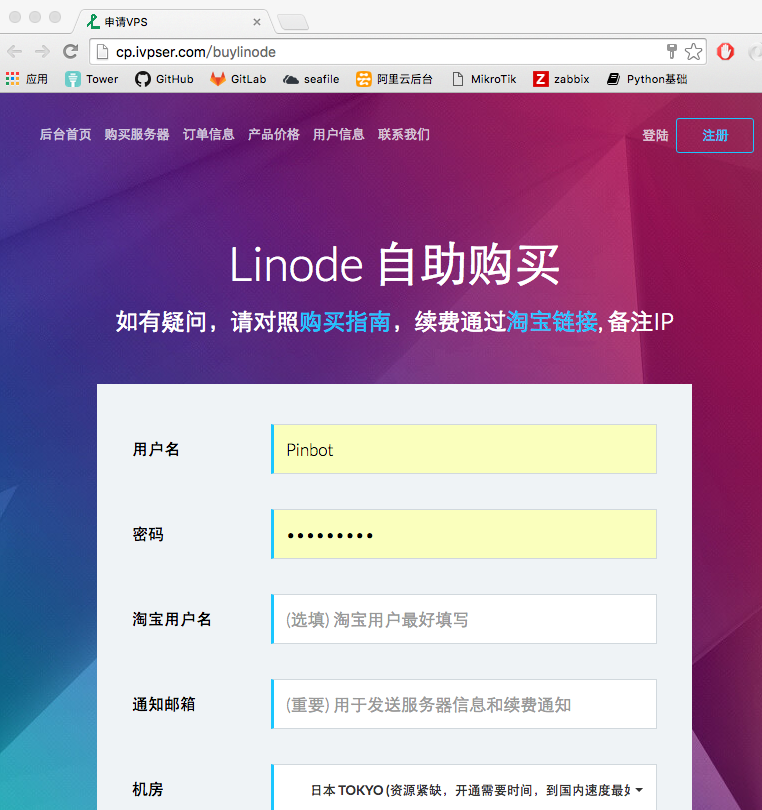
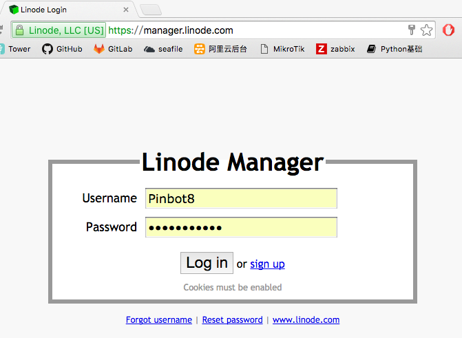
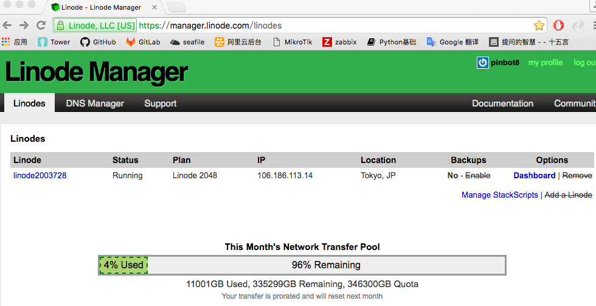
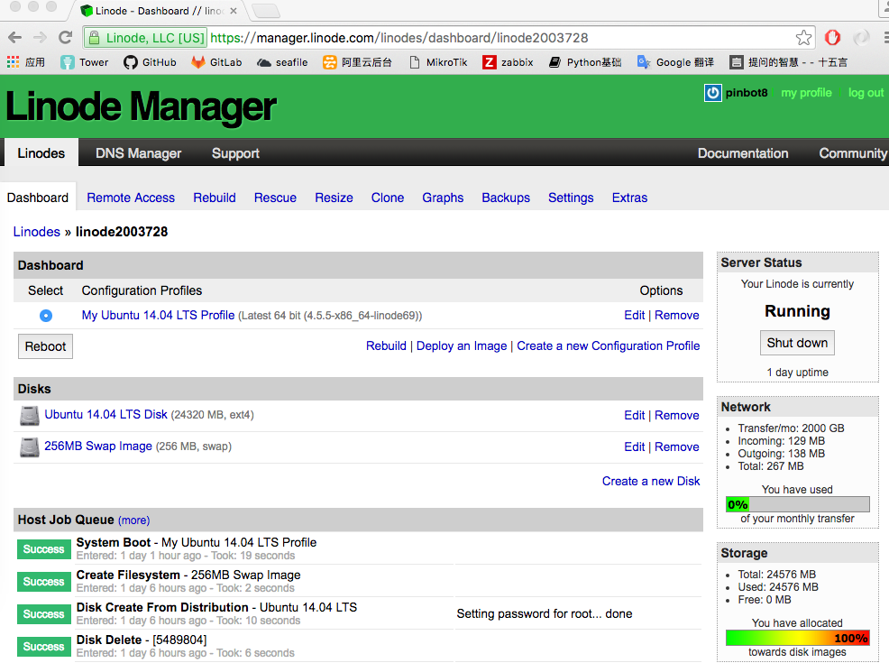
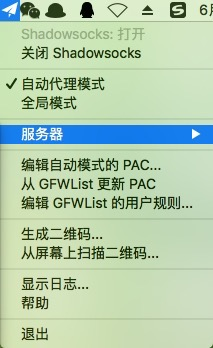
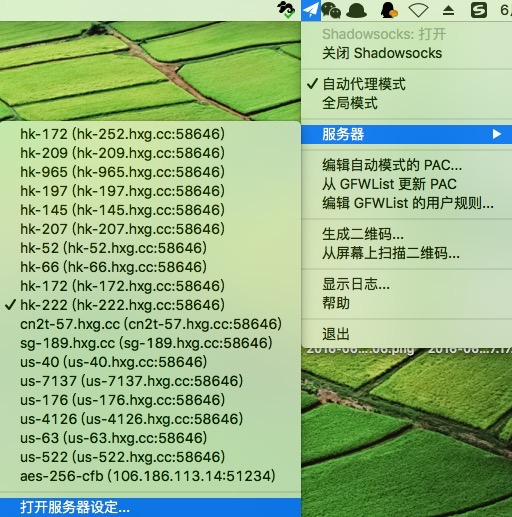
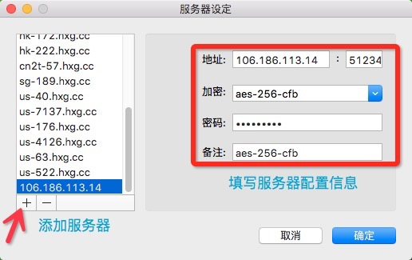

VPS使用及Shadowsocks Server部署¶
Linode日本主机https://www.linode.com/pricing(只有最快，没有更快)
优点：
1、连接速度高；
2、稳定性较好；
3、网络延迟很小；
4、可以部署shadowsocks, 部署公司网站(不需要备案)。
缺点：购买机器价格较高；
测试主机: http://speedtest.tokyo.linode.com/100MB-tokyo.bin
Linode机器购买帮助指南：
1. 首月指今天到月底最后一天，不足一个整月的按天计价；
2. 价格计算公式：http://www.ivpser.com/%E4%BA%A7%E5%93%81%E4%BB%B7%E6%A0%BC
3. 自助购买的最全指南：http://www.ivpser.com/linode-buy-yourself
Linode 按自然月购买, 首月通过自助购买平台 http://cp.ivpser.com/buylinode

账号信息：
后台面板: http://manager.linode.com
用户名: Pinbot8, 密码: Pinbot8123a
默认SSH帐号:root, 密码:linodePass
IP 地址: 106.186.113.14
后台登录界面：

后台管理界面：

VPS实例界面：

登录方式：ssh root@106.186.113.14
Linode的配置和部署: http://www.ivpser.com/how-to-depoly/
Shadowsocks Server部署安装¶
1、服务端安装：
更新软件源
sudo apt-get update
2、安装 pip 及 ShadowSocks server
sudo apt-get install python-pip
pip install shadowsocks
mkdir /etc/shadowsocks/
mv /root/.kxrr/ss-server.json /etc/shadowsocks/server.conf
3、修改 ShadowSocks server 配置文件如下：
vim /etc/shadowsocks/server.conf
{
"server":"106.186.113.14",
"server_port":51234,
"local_port":1080,
"password":"pinbot123",
"timeout":600,
"method":"aes-256-cfb"
}
4、ShadowSocks server 启动
/usr/bin/python /usr/local/bin/ssserver -c /etc/shadowsocks/server.conf -d start
5、ShadowSocks server 日志查看
tail -f /var/log/shadowsocks.log
2016-06-21 03:31:22 INFO starting server at 106.186.113.14:51234
2016-06-21 03:33:19 INFO connecting www.google.com.hk:443 from 61.139.78.89:51608
注：日志检测到 IP为 61.139.78.89（公司公网IP） 的主机访问google地址；
6、ShadowSocks server 加入开机自启动
vim /etc/rc.local #在这个配置文件的exit 0前面一行加上
/usr/bin/python /usr/local/bin/ssserver -c /etc/shadowsocks/server.conf -d start
7、ShadowSocks GUI(客户端) 配置
安装ShadowsocksX.app
下载地址：https://shadowsocks.com/client.html
seafile私有云——>开发环境安装包——> ShadowsocksX.app.zip (MAC版本)
配置步骤：
安装后打开Shadowsocks——>服务器——>打开服务器设定——>“+” 添加服务器——>填写服务端配置文件


